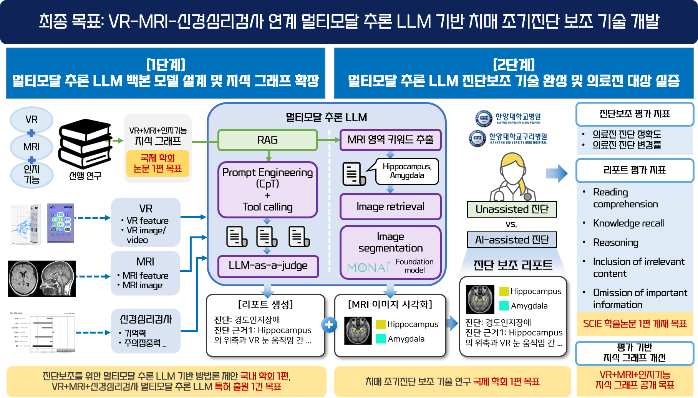
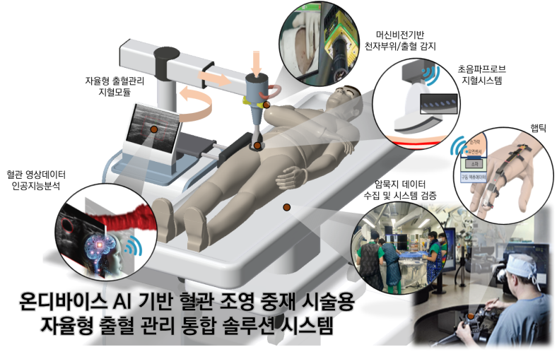
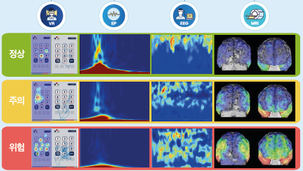

Selected projects주요 프로젝트

LLM-Based Clinical Decision Support with a Knowledge Graph지식 그래프 기반 LLM 임상 의사결정 지원
Sole-PI grant: a verified knowledge graph feeds patient-specific evidence to an LLM that writes cited diagnostic reports.단독 PI 과제: 검증된 지식 그래프가 환자별 근거를 LLM에 제공해, 근거를 인용한 진단 보조 리포트를 생성합니다.

On-Device AI for Self-Guided Hemorrhage Management온디바이스 AI 기반 자가 지혈 관리 시스템
Physical AI: segment the carotid artery in ultrasound automatically, then decide where and how to apply pressure.Physical AI: 초음파에서 경동맥을 자동으로 분할하고, 어디를 어떻게 압박할지 결정합니다.

Agentic AI for Career, Admission and Counseling Support진로·진학·상담 지원 에이전틱 AI
A main agent coordinates student and teacher sub-agents that plan, use tools and reflect.메인 에이전트가 계획·도구 사용·성찰을 수행하는 학생/교사 서브에이전트를 조율합니다.

AI Analysis of Social Interaction via Immersive Content몰입형 콘텐츠 기반 사회적 상호작용 AI 분석
Measures how someone interacts with a virtual agent, not just whether they finish the task.과제를 끝냈는지가 아니라, 가상 에이전트와 어떻게 상호작용하는지를 측정합니다.

VR · EP · EEG · MRI Data Aggregation for Digital Dementia BiomarkersVR·EP·EEG·MRI 데이터 통합 치매 디지털 바이오마커
Fused four modalities into one screening model, then made it work when some tests are missing.네 가지 모달리티를 하나의 선별 모델로 통합하고, 일부 검사가 빠져도 작동하게 만들었습니다.

Digital Biomarker for Early Dementia Screening in VRVR 기반 치매 조기선별 디지털 바이오마커
I built the VR kiosk task and the gaze/hand pipeline at the core of my dissertation. You can try a web version.학위논문의 출발점인 VR 키오스크 과제와 시선·손 데이터 파이프라인을 만들었습니다. 웹 버전을 직접 체험할 수 있어요.